|
|
Соревнования на Мамае от Байкальского Экстрима
|
Ура! Ура! Ура! Наконец-то нам удалось побывать на соревнованиях по фрирайду и даже занять призовое место! Йохо!!! Хочу сказать тост - однажды, три красивых молодых сноубордиста и три молодые красавицы-сноубордистки решили подняться на большую гору и поучаствовать в соревнованиях... (театральная пауза)... Так выпьем же за это !!! :) :) :) |
А теперь расшифровки:
Соревнования - 5-й открытый
Чемпионат Республики Бурятия по фрирайду «Байкальская целина», который организовали Федерация экстремальных видов спорта и путешествий РБ «Байкальский экстрим» и Республиканское агентство по физической культуре и спорту. Про 3-й и 4-й Чемпионаты читайте здесь - 2006 и 2007. Тогда нам не довелось поучаствовать, но мы следили за событиями и морально готовились :)
Большая гора - кулуар Широкий (он же Большой или Спортивный). Может быть Три Березы гора и не большая и вообще не гора, но погода была суровая, снег, ветер, мороз, ну короче зима конкретная, так что место организаторы выбрали единственно правильное.
Молодые и красивые фрирайдеры - это наша компания, которая немалым числом зарегистрировалась на участие, причем наши девушки оказались единственными участницами и были вне конкуренции :) Теперь конкретно из списка регистрации отрывочек:
Серега Яворский - Утулик
Лёха Белокрылов - Слюдянка
Вова Петунин - Иркутск
Марина Леушина - Ангарск
Света Коновалова - Иркутск
Таня Юрочкина - Иркутск
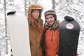 Таня и Марина |
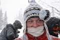 Серега Космо |
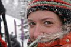 Марина |
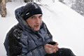 Вова |
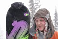 (мимо пробегал :) |
...Имена остальных участников соревнований мы скоро узнаем из официальных протоколов, а всего примерно 15 человек было. Из тех кого я знаю - Гунер, Дима Алексеев, Лёха Худой (Читинский). Еще, конечно же, были ОрганизаторЫ, а конкретно всем рулил Сергей Климов (Лавина), еще были спасатели, фотографы и болельщики. В 12 часов была регистрация, потом торжественное построение, потом опозданцев дорегистрировались в самом конце списка (и нас в том числе) и все пошли наверх.
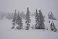 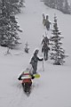 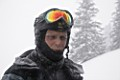 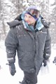 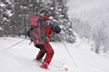
Сергей Лавина
 Шли, шли, шли и наконец все пришли к Трем Березам. Согрелись горячим чаем, тут же опять замерзли, потом на стартовую площадку все переместились, Климов Сергей объяснил еще раз, чего надо делать и чего не надо делать, потом он с товарищем поехали проверять склон и занимать судейские места внизу. Затем по одному стартовали участники соревнований. Кстати, жеребьевки не было, все ехали согласно списка, так что на будущее не забываем старинную фрирайдерскую поговорку - кто раньше встал, тот и склон раскатал :) Первым стартанул Гунер - чемпион 2006 года. Затем остальные с интервалом 4-5 минут. Особенно долго пришлось ждать старта нашим внеконкурсным девчонкам, так что на следующий год не забывайте теплые вещи, а еще лучше девушек вперед пропустить бы, тогда им и склон получше достанется и нам спокойнее :) !
Шли, шли, шли и наконец все пришли к Трем Березам. Согрелись горячим чаем, тут же опять замерзли, потом на стартовую площадку все переместились, Климов Сергей объяснил еще раз, чего надо делать и чего не надо делать, потом он с товарищем поехали проверять склон и занимать судейские места внизу. Затем по одному стартовали участники соревнований. Кстати, жеребьевки не было, все ехали согласно списка, так что на будущее не забываем старинную фрирайдерскую поговорку - кто раньше встал, тот и склон раскатал :) Первым стартанул Гунер - чемпион 2006 года. Затем остальные с интервалом 4-5 минут. Особенно долго пришлось ждать старта нашим внеконкурсным девчонкам, так что на следующий год не забывайте теплые вещи, а еще лучше девушек вперед пропустить бы, тогда им и склон получше достанется и нам спокойнее :) !
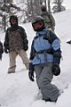 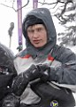 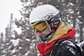 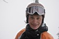 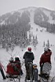 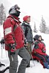
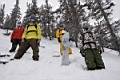
Подведение итогов по горячим следам, торжественное построение, объявление и награждение победителей дипломами, медалями и денежными призами:
1 место - Денис aka Гунер из Иркутска
2 место - Лёха aka Слюдянский из Слюдянки
3 место - Лёха aka Худой из Читы
На сайте организаторов выложен полный протокол соревнований
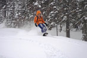
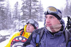
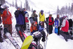
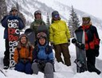
Спасибо Байкальскому Экстриму за наше счастливое детство !!!
Все разошлись по домам, а точнее по палаткам, по зимовьям, по чумам :) Мы конкретно пошли пить чай, греться и отдыхать. Потом пошли немного прыгать с камня на учебке. Вечером Серега топил печку, Света варила солянку, Саша разливал медовуху, Марина и Таня делали торт, Вова варил глинтвейн, а я фотографировал :)
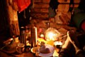 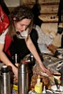 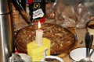
Да, еще для истории - Марина и Таня заходили в пятницу утром, прорывались как взрослые, и воду искали, и вещи раскапывали и печку топили, молодчинки :) Поздно вечером резво забежал Серега Космонавт, приехавший автостопом, а еще позже зашли Вова XV и Саша, приехавшие на маршрутке.
Ночью была пурга, и по крыше ходил Черный Фрирайдер... Правда, правда, его шаги многие слышали... Я даже ходил его смотреть, и было офигенно страшно! У-у-у-у-у!
10 февраля. Утром как обычно будильник звенит в 7, встают все в 9, а кататься идут в 11 :) А некоторые вообще не идут :) А погода хорошая, солнце светит, ветер наверху дует, мороз -19 и снег не катит, а только сходит мелкими лавинками!
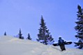 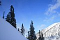 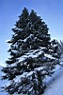 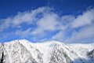 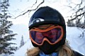
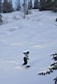 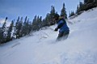 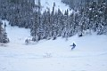 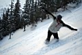 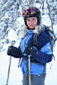
Вот так и покатались, а чего, мне понравилось! ; )
Февраль 2008
Белокрылов Алексей